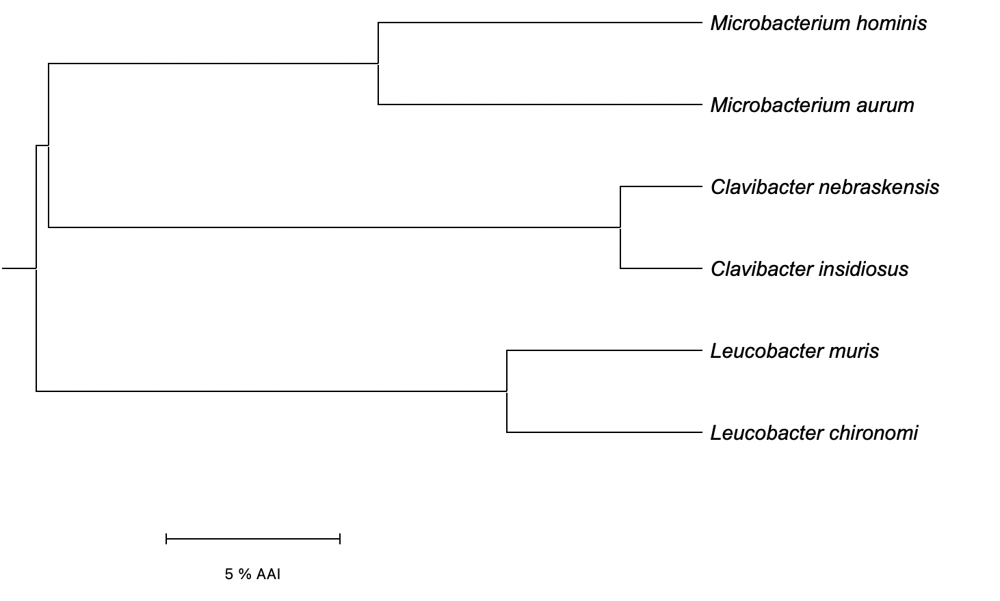

Six bacterial species under family Microbacteriaceae are prepared as a sample dataset.
| Species | Accession | Link |
|---|---|---|
| Clavibacter nebraskensis NCPPB 2531 | GCA_000355695.1 |
NCBI |
| Clavibacter insidiosus LMG 3663 | GCA_002240565.1 |
NCBI |
| Microbacterium hominis NBRC 15708 | GCA_001592125.1 |
NCBI |
| Microbacterium aurum KACC 15219 | GCA_001974985.1 |
NCBI |
| Leucobacter chironomi DSM 19883 | GCA_000421845.1 |
NCBI |
| Leucobacter muris DSM 101948 | GCA_004028235.1 |
NCBI |
Press the button below to download a compressed file containing the genome assemblies of the species above.
Download samples (4.9 MB) EzAAI_samples.zip
Launch EzAAI extract module on your first genome by entering one of the following commands on your terminal.
$ ezaai extract -i fasta/Cn.fasta -o db/Cn.db -l "Clavibacter nebraskensis" // conda env
$ java -jar EzAAI.jar extract -i fasta/Cn.fasta -o db/Cn.db -l "Clavibacter nebraskensis" // runnable JAR
EzAAI will automatically produce a CDS profile DB of the genome with Prodigal with following prompt.
EzAAI |: Running prodigal on genome fasta/Cn.fasta...
EzAAI |: Converting given CDS file into profile database... (fasta/Cn.fasta.faa -> db/Cn.db)
EzAAI |: Task finished.
Now enter the followings to run the same process on the other genomes provided.
$ ezaai extract -i fasta/Ci.fasta -o db/Ci.db -l "Clavibacter insidiosus"
$ ezaai extract -i fasta/Mh.fasta -o db/Mh.db -l "Microbacterium hominis"
$ ezaai extract -i fasta/Ma.fasta -o db/Ma.db -l "Microbacterium aurum"
$ ezaai extract -i fasta/Lc.fasta -o db/Lc.db -l "Leucobacter chironomi"
$ ezaai extract -i fasta/Lm.fasta -o db/Lm.db -l "Leucobacter muris"
You can check the database files lying in the directory by entering the following command.
$ ls db/
Ci.db Cn.db Lc.db Lm.db Ma.db Mh.db
Simply enter the following one-liner to perform all-by-all pairwise AAI calculation on the extracted profiles from above.
$ ezaai calculate -i db/ -j db/ -o out/aai.tsv
The pipeline will automatically detect .db files from the directory and calculate AAI values across the entire set of pairs using MMSeqs2.
EzAAI |: Calculating AAI... [Task 1/36]
EzAAI |: Calculating AAI... [Task 2/36]
...
EzAAI |: Calculating AAI... [Task 36/36]
EzAAI |: Task finished.
Run following to peek the contents of the result file.
$ head -7 out/aai.tsv
ID1 ID2 Label1 Label2 AAI
786958951 786958951 Leucobacter muris Leucobacter muris 100.000000
786958951 199206886 Leucobacter muris Clavibacter nebraskensis 61.609688
786958951 334056981 Leucobacter muris Microbacterium hominis 61.465138
786958951 204122518 Leucobacter muris Microbacterium aurum 61.842079
786958951 1073644442 Leucobacter muris Clavibacter insidiosus 61.453637
786958951 727401181 Leucobacter muris Leucobacter chironomi 88.755422
You can see the result in glance of which the pair from same genus reports relatively high AAI value than the others.
Run following to perform hierarchical clustering on the matrix provided from the previous step.
$ ezaai cluster -i out/aai.tsv -o out/sample.nwk
EzAAI |: AAI matrix identified. Running hierarchical clustering with UPGMA method...
EzAAI |: Task finished.
Resulting file is in a Newick format, which you can either look at it as a text,
$ cat out/sample.nwk
(((Microbacterium hominis:9.325725,Microbacterium aurum:9.325725):9.500001,
(Clavibacter nebraskensis:2.373246,Clavibacter insidiosus:2.373246):16.452480):0.335034,
(Leucobacter muris:5.622289,Leucobacter chironomi:5.622289):13.538471);
or as a tree visualized with different external programs such as MEGA.
